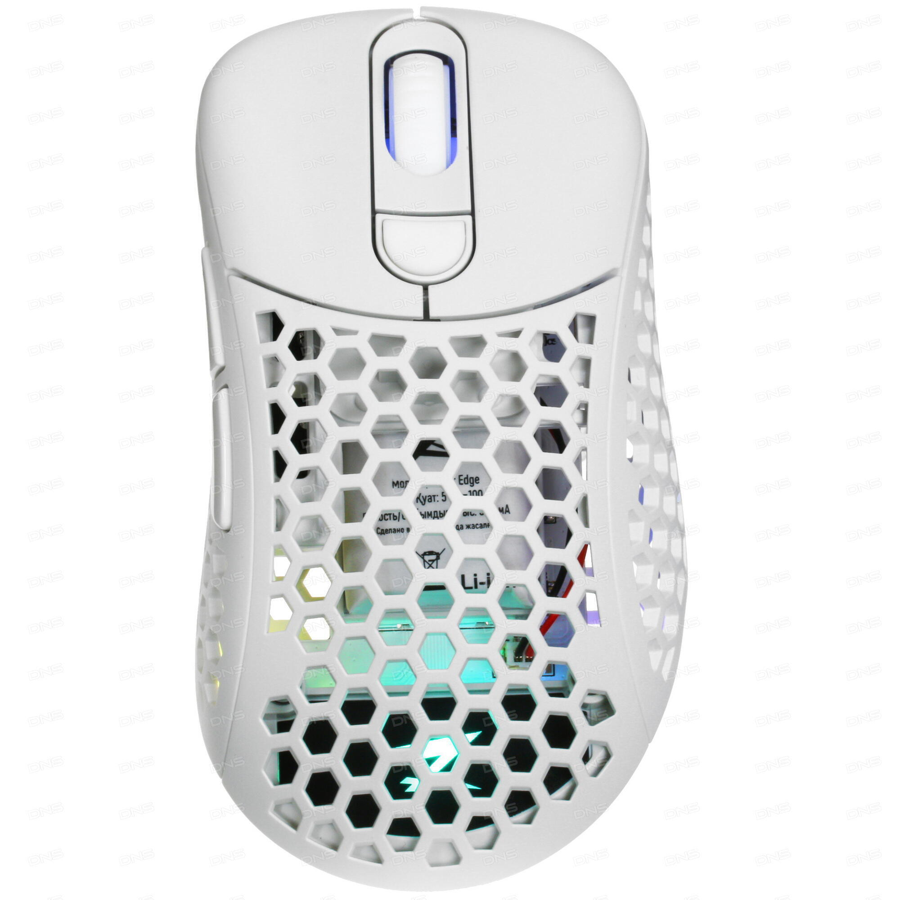
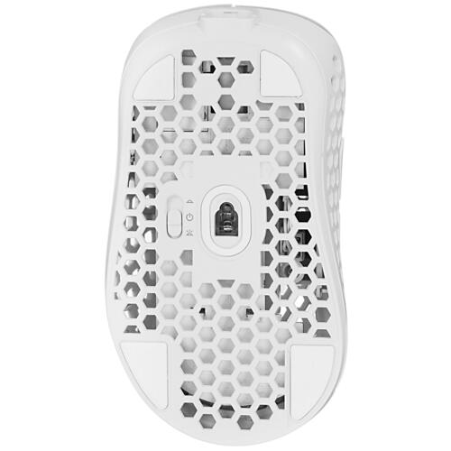

|  |  |
|---|---|
| Вид сверху | Вид снизу |
Мышь беспроводная/проводная ZET GAMING Edge Air Ultra V2 – стильная и функциональная игровая модель с
красивым белым корпусом. Устройство дополнено RGB-подсветкой, кабелем с плотной тканевой оплеткой
и системой настройки веса. Благодаря полым пчелиным сотам корпус весит намного меньше, а
съемные элементы позволят сохранить исходную привлекательность надолго.
Устройство ZET GAMING Edge Air Ultra V2 оснащено шестью кнопками, в том числе боковыми и программируемыми.
Кнопка смены режима позволяет выбрать разрешение датчика в пределах 400-19000 dpi, чтобы настроить удобную для
игры
скорость движения и отклика. Мышь может подключаться через кабель или USB-ресивер (встроенной АКБ хватает на 60
часов работы).
Прибор поставляется со сменными ножками и кнопками, дополнительными панелями, ресивером и
кабелем.
Заводские данные
Гарантия 12 мес.
Общие характеристики
Тип - мышь
Модель - ZET GAMING Edge Air Ultra V2
Внешний вид
Основной цвет-белый
Подсветка-RGB
Тканевая оплетка кабеля-есть
Стилизация-соты
Управление
Общее количество кнопок-6
Дополнительные кнопки-смены DPI/CPI, боковые
Программируемые кнопки-есть
Датчик
Максимальное разрешение датчика-19000 dpi
Тип сенсора мыши-оптический светодиодный
Модель сенсора мыши-PixArt PMW3370
Частота опроса-125 Гц, 250 Гц, 500 Гц, 1000 Гц
Режимы работы датчика-400 dpi, 800 dpi, 1200 dpi
Конструкция
Материал изготовления-пластик
Хват-для правой руки
Система регулировки веса-есть
Бесшумные кнопки-нет
Подключение
Тип подключения-беспроводная/проводная
Тип беспроводной связи-радиоканал
Интерфейс подключения-USB Type-A
Длина кабеля-1.8 м
Питание
Тип источника питания-аккумулятор
Напряжение питания-5 В
Время автономной работы-до 60 часов
Габариты, вес
Ширина-66 мм
Высота-42 мм
Длина-122 мм
Вес-70 г